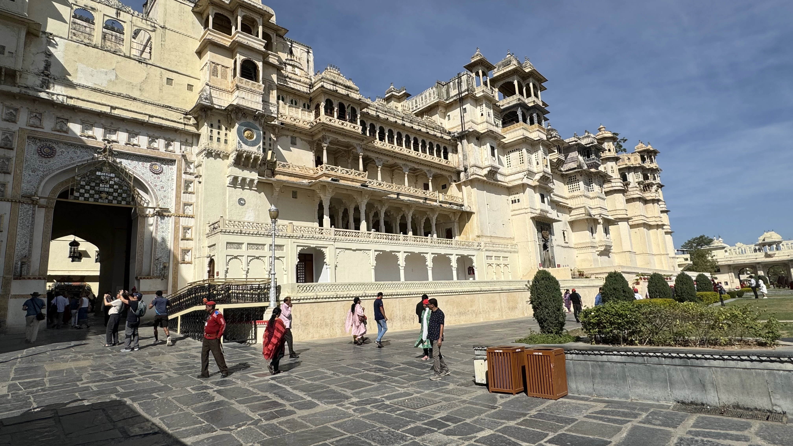
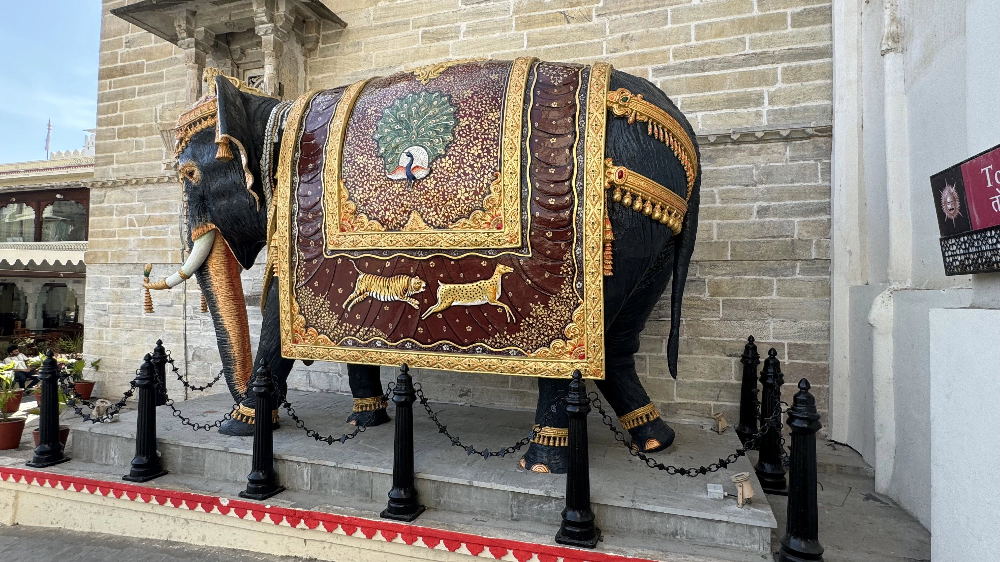
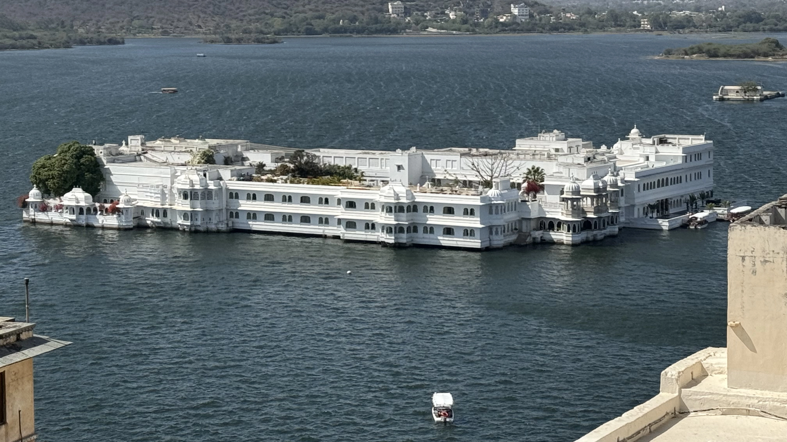

Découverte d'Udaipur : La Venise de l'Est
Histoire

Udaipur, souvent surnommée la "Venise de l'Est" ou la "Cité des Lacs", est une ville située dans l'État du Rajasthan, en Inde. Fondée en 1559 par le Maharana Udai Singh II de la dynastie des Sisodia, Udaipur devint la nouvelle capitale du royaume de Mewar après la perte de Chittorgarh. Selon la légende, Udai Singh II décida de fonder Udaipur après avoir rencontré un sage qui lui conseilla de construire la ville autour du lac Pichola pour sa beauté et sa sécurité. Depuis lors, Udaipur a prospéré en tant que centre culturel et commercial, conservant son héritage royal et ses traditions séculaires.
Économie
L'économie d'Udaipur est diversifiée, avec des secteurs clés tels que le tourisme, l'artisanat, le commerce de bijoux et la production de marbre et de granite. Le tourisme joue un rôle central dans l'économie de la ville, attirant des visiteurs du monde entier grâce à ses magnifiques palais, ses lacs pittoresques et ses festivals vibrants. L'artisanat local, notamment les miniatures, les textiles peints à la main et les sculptures en pierre, contribue également de manière significative à l'économie. Udaipur est également connue pour son secteur minier, avec une production notable de marbre et de pierres précieuses, ainsi que pour son industrie manufacturière croissante.
Architecture
L'architecture d'Udaipur est un magnifique mélange de styles rajput, moghol et européen. La ville est célèbre pour ses palais somptueux, ses temples anciens et ses havelis élégantes. Le City Palace, situé au bord du lac Pichola, est un complexe de palais, de cours et de jardins qui illustre l'architecture royale du Rajasthan. Construit sur une période de 400 ans, il est le plus grand palais du Rajasthan et offre une vue panoramique sur la ville et les lacs environnants. Le Lake Palace, situé au milieu du lac Pichola, est un autre chef-d'œuvre architectural. Construit en marbre blanc, il servait autrefois de palais d'été pour les Maharajas de Mewar et est aujourd'hui un hôtel de luxe. Les temples d'Udaipur, tels que le temple Jagdish, sont également des exemples remarquables de l'architecture indo-aryenne, avec leurs sculptures complexes et leurs détails ornementaux.
Tourisme
Udaipur est une destination touristique de premier plan en Inde, connue pour sa beauté pittoresque, ses palais majestueux et ses festivals colorés. Les visiteurs peuvent explorer les nombreux lacs de la ville, comme le lac Pichola et le Fateh Sagar, en faisant des promenades en bateau et en admirant les paysages sereins. Le City Palace est un incontournable, avec ses musées, ses cours et ses galeries d'art. Le Lake Palace, accessible par bateau, offre une expérience de luxe unique. Les temples, les jardins et les marchés locaux ajoutent à l'attrait touristique de la ville. Les festivals, tels que le Mewar Festival et le Shilpgram Crafts Fair, permettent aux visiteurs de découvrir la culture locale et les traditions artisanales. Udaipur est également célèbre pour ses mariages royaux et ses événements de destination, attirant des couples du monde entier.
Udaipur en Quelques Chiffres
- Population : Environ 450 000 habitants
- Superficie : 37 km²
- Altitude : 598 mètres au-dessus du niveau de la mer
- Fondation : 1559
- Climat : Tropical semi-aride, avec des étés chauds et des hivers doux
- Langue officielle : Hindi et Rajasthani
Les 10 Incontournables d'Udaipur
- 1. City Palace
Un complexe de palais situé au bord du lac Pichola, le plus grand du Rajasthan, offrant une vue panoramique sur la ville. - 2. Lake Palace
Un palais de marbre blanc situé au milieu du lac Pichola, aujourd'hui un hôtel de luxe. - 3. Jagdish Temple
Un temple hindou du 17ème siècle dédié à Lord Vishnu, connu pour ses sculptures détaillées. - 4. Lac Pichola
Un lac artificiel créé au 14ème siècle, entouré de palais, temples et havelis. - 5. Saheliyon Ki Bari
Un jardin historique construit pour les dames d'honneur de la reine, avec des fontaines, des kiosques et des sculptures. - <6. style="font-weight: bolder;">6. Fateh Sagar Lake
Un lac artificiel au nord de Pichola, entouré de collines et de jardins. - 7. Bagore Ki Haveli
Un haveli du 18ème siècle transformé en musée, situé au bord du lac Pichola. - 8. Monsoon Palace (Sajjan Garh)
Un palais perché sur une colline, offrant des vues panoramiques sur Udaipur et ses environs. - 9. Shilpgram
Un village d'artisanat situé à la périphérie d'Udaipur, présentant les arts et métiers traditionnels du Rajasthan. - 10. Jaisamand Lake
Le deuxième plus grand lac artificiel d'Asie, situé à environ 50 km d'Udaipur.
Vous souhaitez plus d'informations
N'hesitez à nous contacter pour plus de renseignements sur nos services, nous sommes à votre ecoute pour faire de ce voyage un moment inoubliable